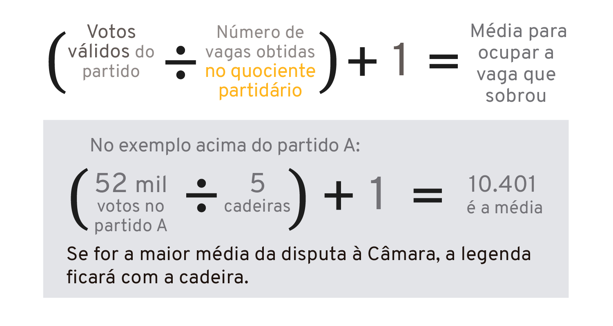

Você sabe Qual é a função de um vereador ?

Aprovam ou rejeitam projetos de lei; elaboram decretos legislativos, resoluções, indicações, pareceres, requerimentos. Participam de comissões permanentes. O Executivo (secretários e prefeito) comparece periodicamente à Câmara, quando convidado, para prestar esclarecimentos aos parlamentares.
Como é calculado o quociente eleitoral
Na eleição de um vereador a contagem dos votos é diferente, o método utilizado é o sistema proporcional. Funciona da seguinte forma: é preciso calcular o quociente eleitoral, para isso, divide-se o número de votos em candidatos e em legenda pelo total de vagas em disputa. O quociente eleitoral é a quantidade de votos necessário para que o partido eleja um vereador.
Como é calculado o quociente eleitoral
O segundo passo é calcular o quociente partidário. Divide-se os votos em candidatos e na legenda daquele partido pelo quociente eleitoral. O resultado da conta é o total de vagas que aquele grupo conquistou.Os candidatos que ocuparão as vagas devem receber votos numa quantidade igual ou maior que 10% do quociente eleitoral. Essa regra de 2016 foi para tentar evitar o chamado efeito Tiririca, ou seja, eleger candidatos sem qualquer representatividade porque alguém do partido recebeu uma quantidade muito alta de votos.
Sobra de vaga
Se houver sobra de vagas, faz-se um novo cálculo: divide-se a quantidade de votos válidos do partido ou coligação pelo número de vagas alcançadas no cálculo anterior, mais um. O partido ou coligação que obtiver a maior média recebe a primeira vaga disponível, desde que o candidato tenha cumprido a exigência mínima dos 10%.
No ultimo caso
Quando não houver mais partidos que atendam a todas essas exigências, as vagas passarão a ser distribuídas às legendas que apresentarem as maiores médias, segundo o cálculo explicado anteriormente e conforme a ordem de votação dos seus candidatos.
